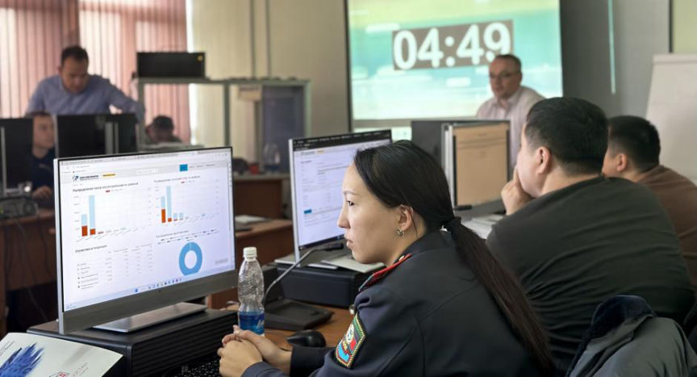

Training by OSCE on cryptocurrencies and Dark Web investigations in Kyrgyzstan
~2 min read | Published on 2022-12-02, tagged Cryptocurrency-Regulation, FEDS using 292 words.

Around 20 representatives from operational units of the Ministry of Internal Affairs, as well as the Academy’s staff, took part in the training. They learned about the main concepts and key trends in the areas of internetworking, anonymity and encryption, cryptocurrencies, obfuscation techniques, Dark Web, and Tor networks. They also practiced approaches and methods for cryptocurrency seizing, blockchain analysis, and searching on the Dark Web. The training was based on materials developed by the European Cybercrime Training and Education Group (ECTEG). It was delivered by two experts from Germany and North Macedonia.
From 21 to 25 November, the OSCE Transnational Threats Department, in close co-operation with the OSCE Programme Office in Bishkek, organized a course on cryptocurrencies and Dark Web investigations at the Academy of the Ministry of Internal Affairs of the Kyrgyz Republic.
“Both cryptocurrencies and the Dark Web have become useful aids and amplifiers of traditional crimes. The anonymity they offer makes them attractive for people with malicious intents. It is thus important that law enforcement officials understand key concepts in this area, and what implications they have for investigation of crimes,” stressed Alexander Eliseev, Head of the Politico-Military Department at the OSCE Programme Office in Bishkek, during the course’s opening.
“This is a second event related to cybercrime that the OSCE is organizing at the Academy this month. We are grateful that staff from the Ministry of Internal Affairs can benefit from international expertise and training materials,” said Tariel Abitov, the Head of the Academy of the Ministry of Internal Affairs of the Kyrgyz Republic.
The course was organized within the second phase of the OSCE extra-budgetary project “Capacity Building on Combating Cybercrime in Central Asia”, which is funded by the United States of America, Germany, and the Republic of Korea.
Sources: OSCE
Around 20 representatives from operational units of the Ministry of Internal Affairs, as well as the Academy’s staff, took part in the training. They learned about the main concepts and key trends in the areas of internetworking, anonymity and encryption, cryptocurrencies, obfuscation techniques, Dark Web, and Tor networks. They also practiced approaches and methods for cryptocurrency seizing, blockchain analysis, and searching on the Dark Web. The training was based on materials developed by the European Cybercrime Training and Education Group (ECTEG). It was delivered by two experts from Germany and North Macedonia.
From 21 to 25 November, the OSCE Transnational Threats Department, in close co-operation with the OSCE Programme Office in Bishkek, organized a course on cryptocurrencies and Dark Web investigations at the Academy of the Ministry of Internal Affairs of the Kyrgyz Republic.
“Both cryptocurrencies and the Dark Web have become useful aids and amplifiers of traditional crimes. The anonymity they offer makes them attractive for people with malicious intents. It is thus important that law enforcement officials understand key concepts in this area, and what implications they have for investigation of crimes,” stressed Alexander Eliseev, Head of the Politico-Military Department at the OSCE Programme Office in Bishkek, during the course’s opening.
“This is a second event related to cybercrime that the OSCE is organizing at the Academy this month. We are grateful that staff from the Ministry of Internal Affairs can benefit from international expertise and training materials,” said Tariel Abitov, the Head of the Academy of the Ministry of Internal Affairs of the Kyrgyz Republic.
The course was organized within the second phase of the OSCE extra-budgetary project “Capacity Building on Combating Cybercrime in Central Asia”, which is funded by the United States of America, Germany, and the Republic of Korea.
Sources: OSCE